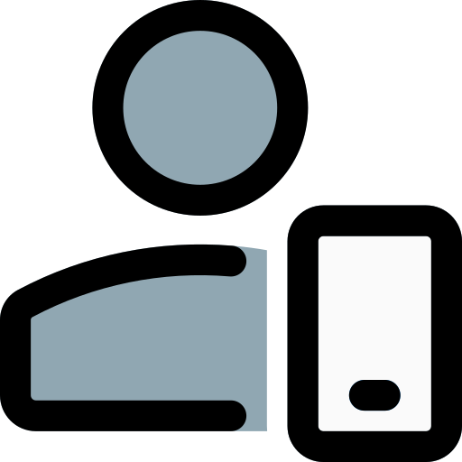
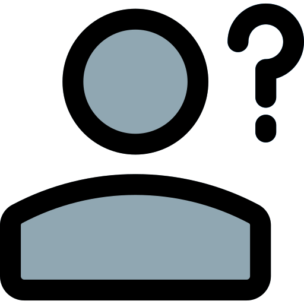

<ion-content [fullscreen]="true">
  <div id="cuarto-login" class="ion-text-center">
    <form class="login-form">
      <h2 id="header">
        Bienvenido!
      </h2>
      <p>Inicie sesión para continuar</p>

      <ion-item>
        <ion-input type="email" label="Correo electrónico" labelPlacement="floating" fill="none" placeholder="Ingrese su correo..." [(ngModel)]="correo" name="correo" required></ion-input>
      </ion-item>

      <ion-item>
        <ion-input type="password" label="Contraseña" labelPlacement="floating" fill="none" placeholder="Ingrese su Contraseña..." [(ngModel)]="password" name="password" required></ion-input>
      </ion-item>

      <ion-button expand="block" id="iniciar-sesion" (click)="this.IniciarSesion(correo, password)">Iniciar sesión</ion-button>
      
      <form *ngIf="this.mensajeAMostrar" id="form-mostrar-mensajes">
        <ion-card-header id="mensaje-mostrado" [ngClass]="{'mensaje-error': mensajeError == true, 'mensaje-exito': mensajeError == false}" class="headers">{{mensajeAMostrar}}</ion-card-header>
      </form>
      <br>

      <div id="form-acceso-rapido">
        <ion-button class="btn-acceso-rapido" fill="outline" (click)="InicioSesionRapido('admin')"> Iniciar sesión como administrador</ion-button>
        <br>
        <ion-button class="btn-acceso-rapido" fill="outline" (click)="InicioSesionRapido('usuario')"> Iniciar sesión como usuario</ion-button>
        <br>
        <ion-button class="btn-acceso-rapido" fill="outline" (click)="InicioSesionRapido('tester')"> Iniciar sesión como tester</ion-button>
        <br>
        <ion-button class="btn-acceso-rapido" fill="outline" (click)="InicioSesionRapido('invitado')"> Iniciar sesión como invitado</ion-button>
      </div>
    </form>
  </div>
</ion-content>
